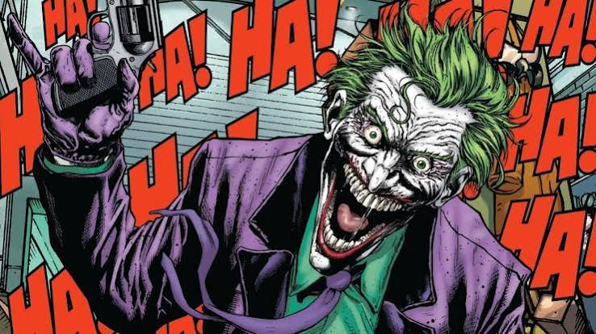

Curiosidades
Segredos do universo DC
Desde 1940 marcando gerações
LV
Curiosidades
Desde 1940 marcando gerações

Arquivo Liga dos vilões
Você sabia?
O Coringa seria morto logo em 1940, mas o editor mudou o final na última hora por ver potencial no vilão.
Lex Luthor era ruivo e ficou careca em 1941 após um desenhista confundi-lo por engano com um capanga.
O Exterminador (Slade Wilson) inspirou o Deadpool, que foi batizado de Wade Wilson pela Marvel como piada.